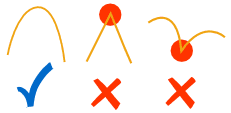
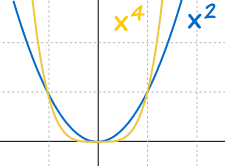
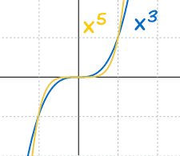
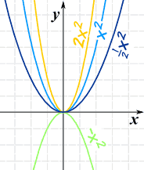
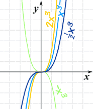
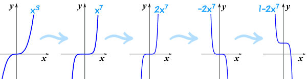
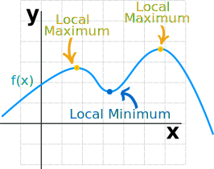
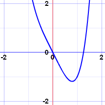
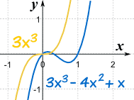
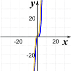

How Polynomials Behave
A polynomial looks like this: |
| example of a polynomial |
Continuous and Smooth
There are two main things about the graphs of Polynomials:
The graphs of polynomials are continuous, which is a special term with an exact definition in calculus, but here we will use this simplified definition:
 we can draw it without lifting our pen from the paper
we can draw it without lifting our pen from the paper
The graphs of polynomials are also smooth. No sharp "corners" or "cusps"

How the Curves Behave
Let us graph some polynomials to see what happens ...
... and let us start with the simplest form:
f(x) = xn
Which actually does interesting things.

Even values of "n" behave the same:
- Always above (or equal to) 0
- Always go through (0,0), (1,1) and (-1,1)
- Larger values of n flatten out near 0, and rise more sharply above the x-axis
And:

Odd values of "n" behave the same
- Always go from negative x and y to positive x and y
- Always go through (0,0), (1,1) and (−1,−1)
- Larger values of n flatten out near 0, and fall/rise more sharply from the x-axis
Power Function of Degree n
Next, by including a multiplier of a we get what is called a "Power Function":
f(x) = axn
f(x) equals a times x to the "power" (ie exponent) n
The "a" changes it this way:
- Larger values of a squash the curve (inwards to y-axis)
- Smaller values of a expand it (away from y-axis)
- And negative values of a flip it upside down
| Example: f(x) = ax2 a = 2, 1, ½, −1 |
Example: f(x) = ax3 a = 2, 1, ½, −1 |
|
|  |
 |
We can use that knowledge when sketching some polynomials:
Example: Make a Sketch of y=1−2x7
Start with the simplest "odd power" graph of x3, and gradually turn it into 1−2x7
- We know how x3 looks,
- x7 is similar, but flatter near zero, and steeper elsewhere,
- Squash it to get 2x7,
- Flip it to get −2x7, and
- Raise it by 1 to get 1−2x7.
Like this:

So by doing this step-by-step we can get a good result.
Turning Points
A Turning Point is an x-value where a local maximum or local minimum happens:

How many turning points does a polynomial have?
Never more than the Degree minus 1
The Degree of a Polynomial with one variable is the largest exponent of that variable.

Example: a polynomial of Degree 4 will have 3 turning points or less
 |
 | |
| x4−2x2+x has 3 turning points |
x4−2x has only 1 turning point |
The most is 3, but there can be less.
We may not know where they are, but at least we know the most there can be!
What Happens at the Ends
And when we move far from zero:
- far to the right (large values of x), or
- far to the left (large negative values of x)
then the graph starts to resemble the graph of y = axn where axn is the term with the highest degree.
Example: f(x) = 3x3−4x2+x
Far to the left or right, the graph will look like 3x3
|  |  | |
| Near Zero, they are different |
Far From Zero, they become similar |
This makes sense, because when x is large, then x3 is much greater than x2 etc
This is officially called the "End Behavior Model".
And yes, we have come to the end!
Summary
- Graphs are continuous and smooth
- Even exponents behave the same: above (or equal to) 0; go through (0,0), (1,1) and (−1,1); larger values of n flatten out near 0, and rise more sharply.
- Odd exponents behave the same: go from negative x and y to positive x and y; go through (0,0), (1,1) and (−1,−1); larger values of n flatten out near 0, and fall/rise more sharply
- Factors:
- Larger values squash the curve (inwards to y-axis)
- Smaller values expand it (away from y-axis)
- And negative values flip it upside down
- Turning points: there are "Degree − 1" or less.
- End Behavior: use the term with the largest exponent